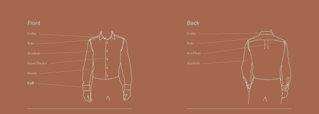

Searching for the Perfect Shirt
From Advanced Issues in Visual Syntax taught by Dan Olsen
Objective
To create a distinct visual language for a parallax website.
Context
Searching for the Perfect Shirt uses texture, immersive colors, poetic typography, and a nebulous hierarchy of information to favor the communication of imagination and emotion rather than knowledge.
Disciplines
- Art Direction
- Creative Direction
- Communication Design
- Content Strategy
- Interaction Design
Skills and Processes
- Photo Post-processing
- Wireframing
Tools
- Illustrator
- Photoshop
Adding Interaction
I created a high-fidelity wireframe marked with interaction notes for how the parallax might work.
{kind=link}
1
2
First Explorations
I started out experimenting with a rational approach of presenting information.

Colors
Narrative Approach
Rather than strictly explanatory, I decided to present the content more as a narrative accompanied with an appropriate visual language.
Typography
I combined Walbaum's didone letterforms with Absara and Absara Sans's legible yet expressive letterforms. Both share humanist subtleties.